An app that lets people who don't know what to study talk to real professionals and try out a job before choosing it.
It's the Figma prototype exactly as it was tested in Maze: onboarding, home, chats and profiles.
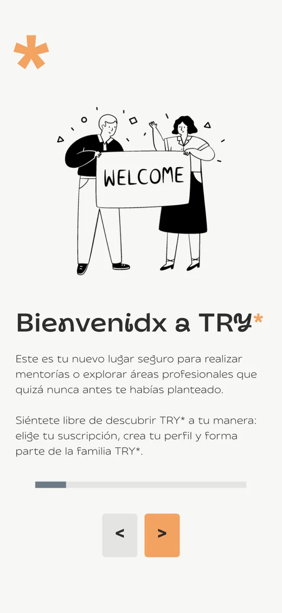
▶ Try the prototypeAnd it's asked as if it were obvious. The information exists (degrees, career paths, rankings), but nobody tells you what a job is really like or whether you'd fit in.
I ran 54 surveys, interviews, netnography, benchmarking and a SWOT. This is what came up most:
“Just social media and my circle, it's not like there was anywhere to go to sort out these doubts.”Laura, 21, on how she chose her degree
What they're looking for most isn't a right answer, but a space where they can get it wrong without feeling like a failure.
Explore professional profiles with their real career path, not a cold CV. Ask in 1:1 mentoring sessions. And try: with “Days with me” you spend a day with a professional at work before choosing.
The tone matches: calm and reassuring, no aspirational language. In TRY* there are no right paths, only things to try.
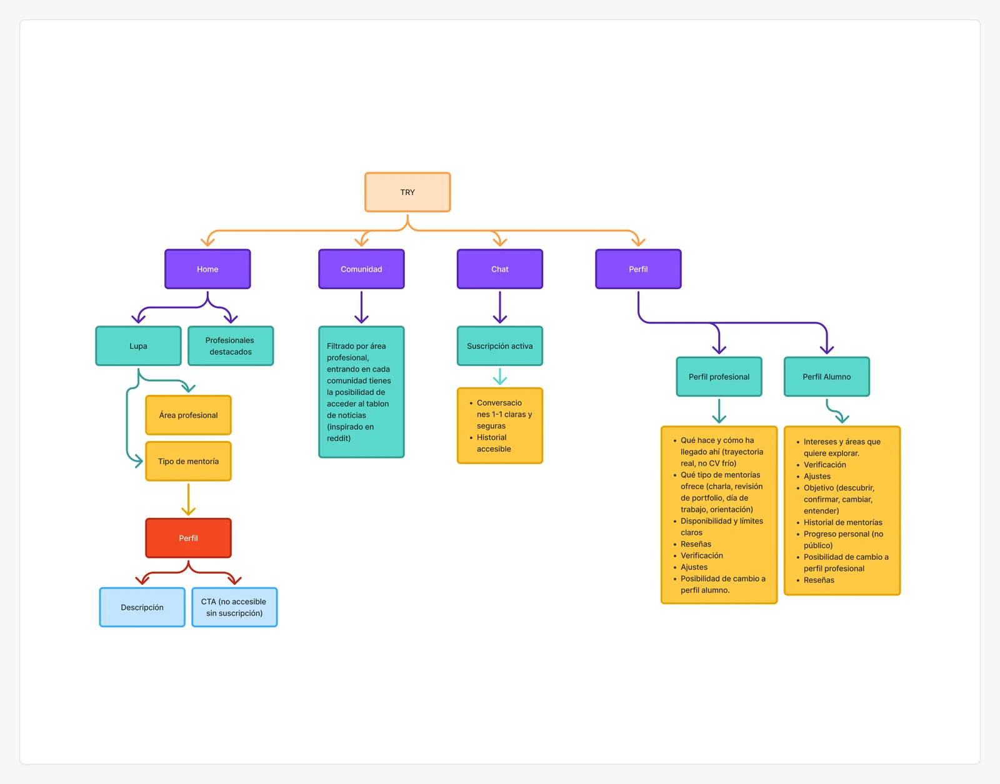
TRY* is a marketplace, so I also interviewed the people who'd have to open the doors of their work. Jose runs a trucking company:
“Well, I think they'd get a bit bored, because I spend hours driving with the radio on and that's it. But hey, anyone who wants to come, can come.”Jose, transport company
He was interested, on one condition: that it was worth his while. That's where the model comes from. Young people pay a subscription and professionals earn a commission for each mentoring session or experience. And since many users are minors, every profile is verified and parents sign the authorisation.
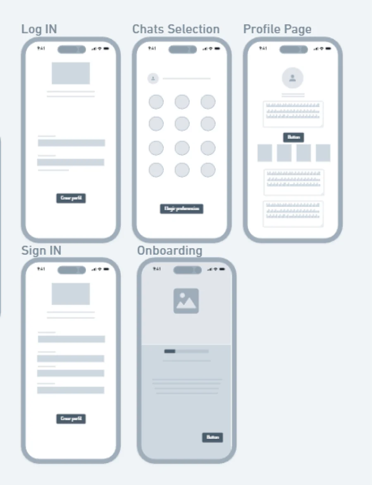
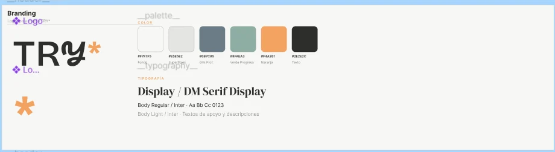
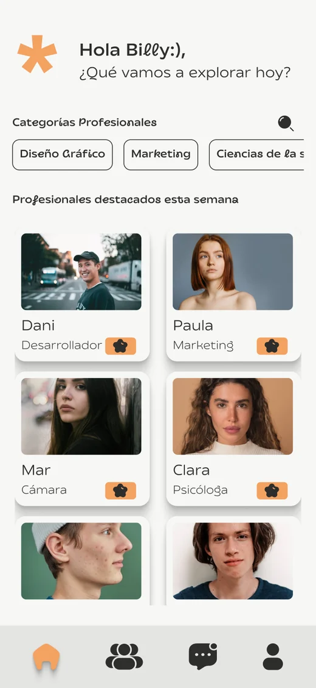
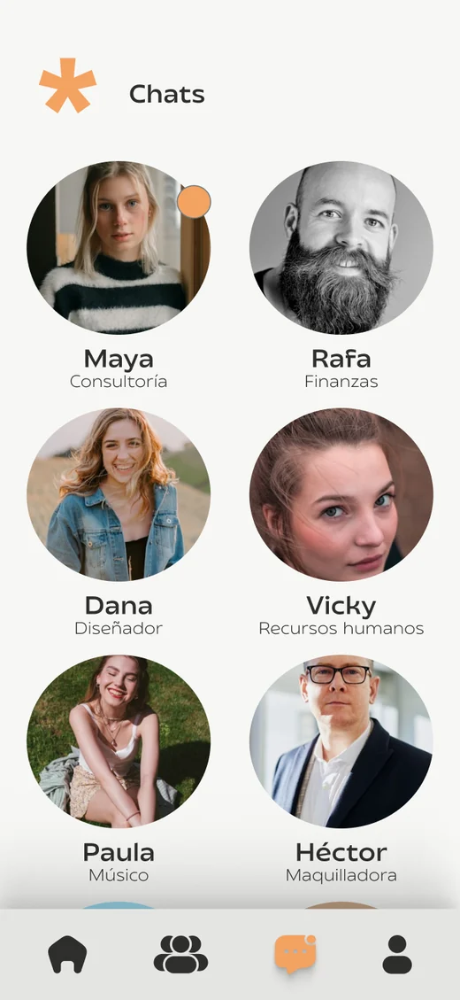
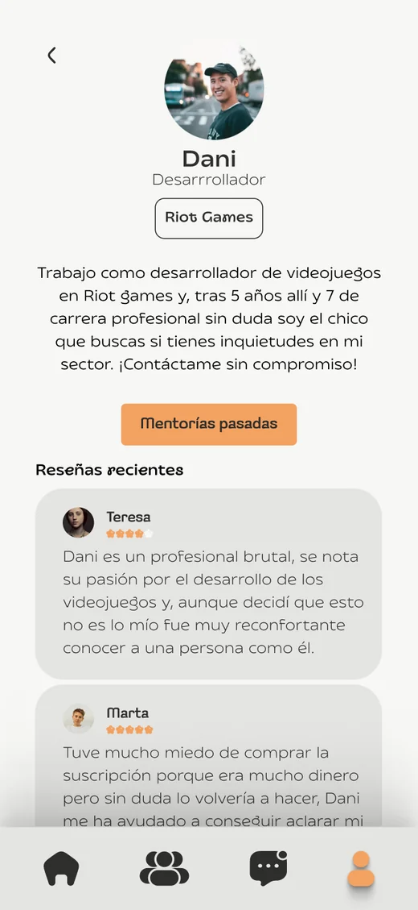
“I love the visual style, especially the illustrations and the change of typeface in certain characters. It has a lot of Sevillian flair.”Maze test participant
Maze test: complete the onboarding, find a professional's profile and open a chat.
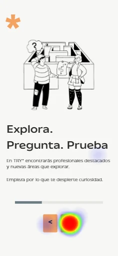
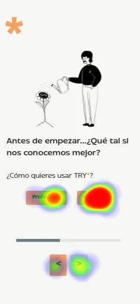
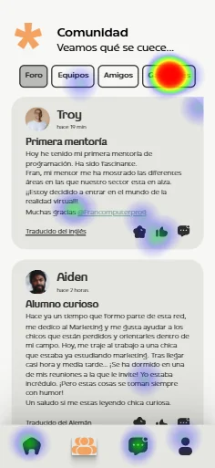
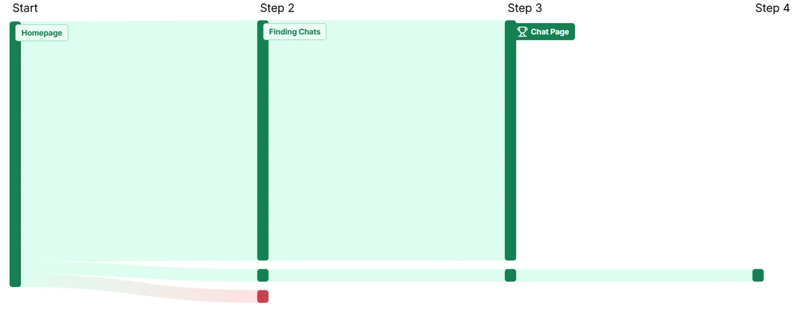
But the comments said something the numbers didn't:
“It's really easy to use, but I don't know what the app is for.”Maze test participant
The test left three improvements: strengthen the opening message of the onboarding, more direct shortcuts for people in a hurry and a transition into home from the asterisk.
Before how it's used, make clear what it's for. And I'd test “Days with me” with real professionals, outside Figma.
Jose thinks nobody would want to spend a day in his truck. I think more than one person would, and I have a few ideas on how to make it happen. Shall we talk?
A jewellery brand with attitude, designed from scratch in five days: brand, design system and online store.
The clickable prototype, with the four categories and the photo swap when you hover over each product.
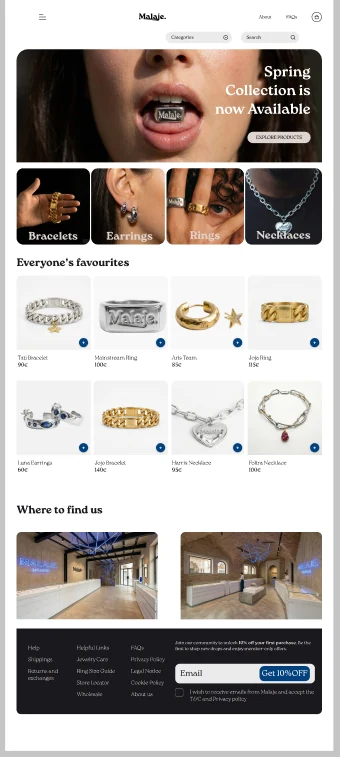
▶ Try the prototype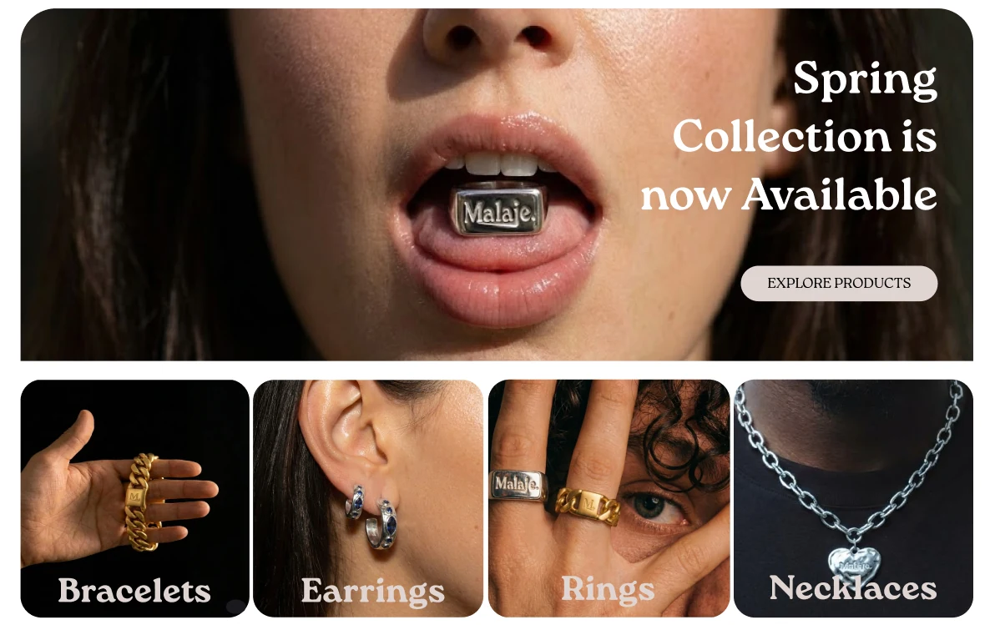
I wanted a jewellery brand with attitude but no fuss: statement pieces to wear day and night, in four lines (bracelets, earrings, rings and necklaces).
And I knew the identity had to speak before anyone read a word. That's why the name is engraved on the jewellery itself, in the model's mouth.
The moodboard wasn't just inspiration. Next to each reference I noted what I was taking from it: rounded corners and a clean bar with the logo in the centre, a cover with the name built into the image and, above all, what happens when you hover over a product.
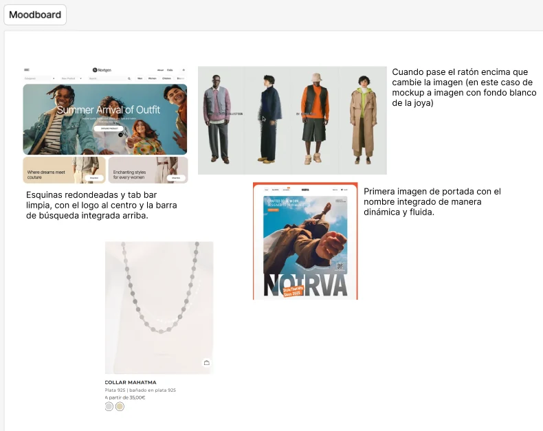
You can't try anything on in an online jewellery store. So the product card lets you see it worn.
Each card has two states: the piece alone on a white background, clean and distraction-free, and the piece worn by a person, so you can picture it on you. It was the first component I designed and the rest of the system grew from it.
Before touching a component, I documented the foundations. Blue gives solidity and trust; beige adds warmth and takes the edge off. For headings, Cormorant, elegant without being stiff, and Montserrat so the text reads effortlessly.
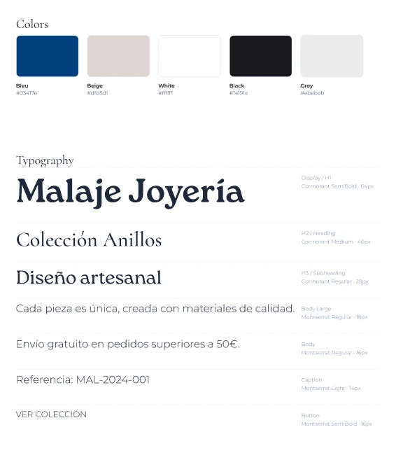
A home page and four categories with the same structure: access to all of them at the top, the product grid and the footer. On mobile, the same logic: hamburger menu, two columns and every category one tap from the home page.
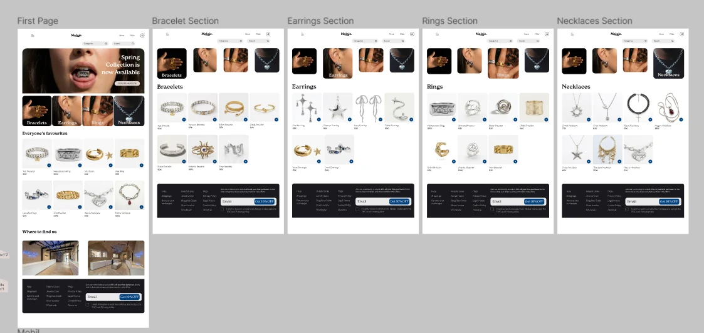
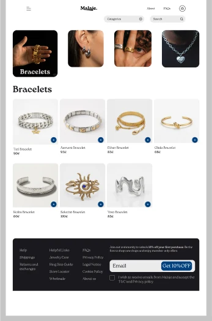
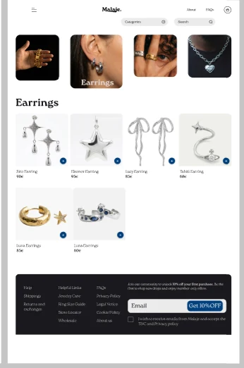
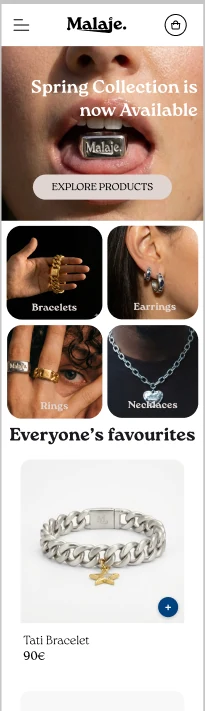
I did it as a public challenge and shared it on social media as I went. I connected Claude Code to Figma via MCP for the most mechanical part: renaming layers, tidying the UI Kit and structuring sections. I spent the time I saved on what matters: deciding.
Malaje hasn't been tested with users yet. The first thing I'd test is my main bet: whether seeing the piece worn sells more than seeing it alone. Then the full purchase flow, from the card to checkout.
My bet is yes. And I know exactly how I'd measure it, if you fancy talking it through.
The landing page of a wine social network for people who know nothing about wine. And for those who do.
Open it on desktop and drag the phone over a bottle.
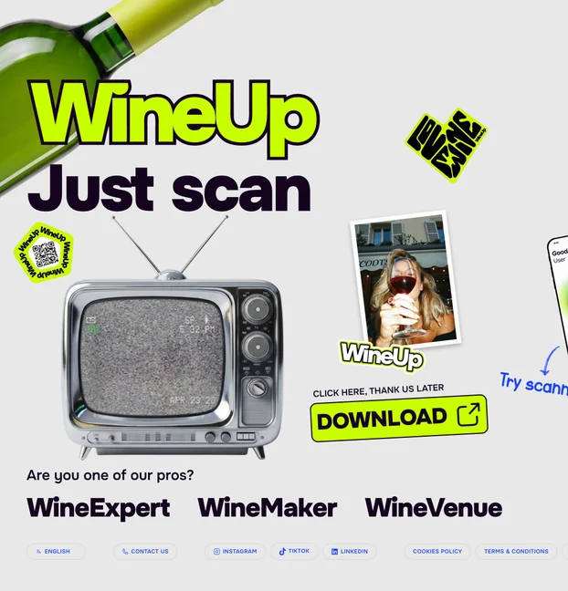
Open wineup.world ↗WineUp speaks at once to people who drink wine (WineLovers), people who know wine (WineExperts), wineries (WineMakers) and bars and restaurants (WineVenues). The landing had to win over all four without scaring anyone who can't tell a tempranillo from a garnacha.
Wine is not an exam.The underlying idea, in one line from my Figma file
There's no how-it-works video on the home page: there's a phone you can drag with the mouse. When you move it over a wine, it scans it right in front of you, with the same screens as the app: idle, scan, scanning and result. On mobile and tablet the phone doesn't appear.
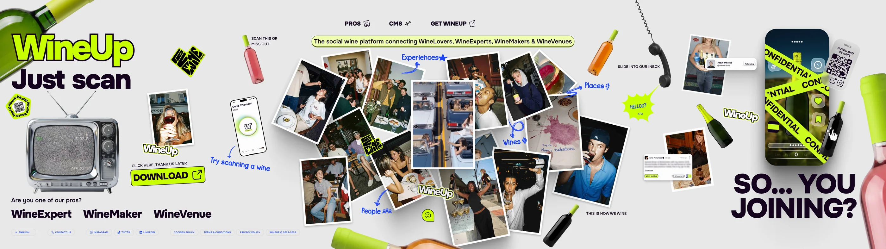
No wine glasses on white tablecloths. The landing looks like a corkboard full of stuff: polaroids of people having a good time, stickers you can drag around (one has a QR code that actually scans), a retro TV with video and handwritten text. And a tone that doesn't take wine too seriously:
Each professional profile has its own page: what you can do today, what's coming next (covered with “CONFIDENTIAL” tape, which you can also drag) and a path of numbered post-its to join. Wineries end with a form to claim their profile.
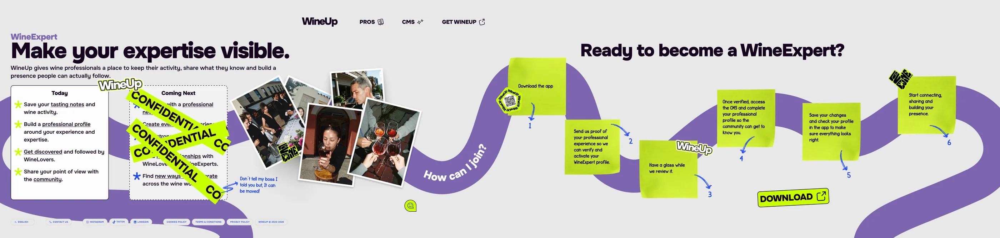
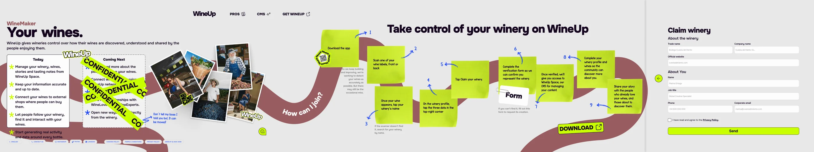
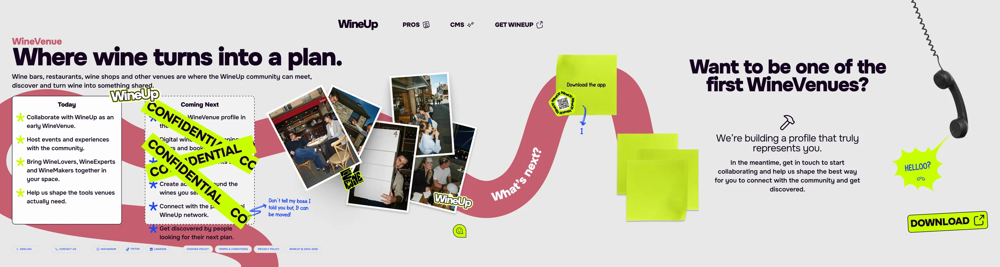
Every interactive piece has its note for development in Dev Mode: what it does on desktop, what changes on tablet and mobile, and how it works with a keyboard. Here are a few, in their original wording:
Una app para que quien no sabe qué estudiar hable con profesionales de verdad y pruebe un trabajo antes de elegirlo.
Es el prototipo de Figma tal cual se testeó en Maze: onboarding, inicio, chats y perfiles.
Y te lo piden como si fuera obvio. La información existe (grados, salidas, rankings), pero nadie te cuenta cómo es de verdad un trabajo ni si encajas ahí.
Hice 54 encuestas, entrevistas, netnografía, benchmarking y un DAFO. Esto es lo que más se repitió:
«Sólo las redes sociales y mi círculo, tampoco es que hubiera un sitio donde acudir para resolver estas dudas.»Laura, 21 años, sobre cómo eligió carrera
Lo que más buscan no es una respuesta correcta, sino un espacio donde poder equivocarse sin sentirse un fracaso.
Explorar perfiles de profesionales con su trayectoria real, no un CV frío. Preguntar en mentorías 1:1. Y probar: con «Días conmigo» pasas un día con un profesional en su trabajo antes de elegir.
El tono va a juego: calma y seguridad, nada de lenguaje aspiracional. En TRY* no hay caminos correctos, solo cosas que probar.
TRY* es un marketplace, así que también entrevisté a quien tendría que abrir las puertas de su trabajo. Jose tiene una empresa de camiones:
«Hombre, yo creo que se aburriría un poco porque paso muchas horas conduciendo con la radio y ya. Pero bueno, el que quiera venir que venga.»Jose, empresa de transporte
Le interesaba, pero con una condición: que le compensara. De ahí sale el modelo. Los jóvenes pagan una suscripción y los profesionales cobran una comisión por cada mentoría o experiencia. Y como muchos usuarios son menores, todos los perfiles se verifican y los padres firman la autorización.
«Me encanta la línea visual, en especial las ilustraciones y el cambio de tipografía en ciertos caracteres. Tiene mucho arte sevillano.»Participante del test con Maze
Test con Maze: completar el onboarding, encontrar el perfil de un profesional y entrar en un chat.
Pero los comentarios dijeron algo que los números no:
«Está muy fácil de usar, pero no sé para qué sirve la app.»Participante del test con Maze
El test dejó tres mejoras: reforzar el mensaje inicial del onboarding, accesos más directos para quien va con prisa y una transición al inicio desde el asterisco.
Antes que cómo se usa, que quede claro para qué sirve. Y probaría «Días conmigo» con profesionales de verdad, fuera de Figma.
Jose cree que nadie querría pasar un día en su camión. Yo creo que más de uno sí, y tengo alguna idea de cómo conseguirlo. ¿Lo hablamos?
Una joyería con actitud, diseñada de cero en cinco días: marca, sistema de diseño y tienda online.
El prototipo navegable, con las cuatro categorías y el cambio de foto al pasar por cada producto.
Quería una joyería con actitud pero sin complicarse: piezas con carácter para llevar de día y de noche, en cuatro líneas (pulseras, pendientes, anillos y collares).
Y tenía claro que la identidad tenía que hablar antes de que nadie leyera una palabra. Por eso el nombre va grabado en la propia joya, en la boca de la modelo.
El moodboard no era solo inspiración. Al lado de cada referencia apunté qué me llevaba de ella: esquinas redondeadas y una barra limpia con el logo al centro, una portada con el nombre integrado en la imagen y, sobre todo, lo que pasa al pasar el ratón por un producto.
En una joyería online no te puedes probar nada. Así que la tarjeta de producto te deja verla puesta.
Cada tarjeta tiene dos estados: la joya sola sobre fondo blanco, limpia y sin distracciones, y la joya puesta en una persona, para que te la imagines en ti. Fue el primer componente que diseñé y el resto del sistema salió de ahí.
Antes de tocar un componente, documenté la base. El azul da solidez y confianza; el beige aporta calidez y rebaja la seriedad. Para los títulos, Cormorant, elegante sin ser rígida, y Montserrat para que el texto se lea sin esfuerzo.
Una portada y cuatro categorías con la misma estructura: acceso a todas arriba, la cuadrícula de productos y el pie. En móvil, la misma lógica: menú hamburguesa, dos columnas y cada categoría a un toque desde la portada.
Lo hice como reto público y lo fui contando en redes. Conecté Claude Code a Figma por MCP para la parte más mecánica: renombrar capas, ordenar el UI Kit y estructurar secciones. Ese tiempo lo gané para lo que importa: decidir.
Malaje todavía no ha pasado por usuarias. Lo primero que probaría es mi apuesta principal: si ver la joya puesta hace que se compre más que verla sola. Después, el flujo de compra completo, de la tarjeta al pago.
Mi apuesta es que sí. Y tengo claro cómo lo mediría, si te apetece que lo hablemos.
La landing de una red social del vino para gente que no sabe de vino. Y para los que sí.
Entra en escritorio y arrastra el móvil por encima de una botella.
WineUp le habla a la vez a quien bebe vino (WineLovers), a quien sabe de vino (WineExperts), a las bodegas (WineMakers) y a los bares y restaurantes (WineVenues). La landing tenía que convencer a los cuatro sin asustar a nadie que no sepa distinguir un tempranillo de un garnacha.
Wine is not an exam.La idea de fondo, en una línea de mi archivo de Figma
En la home no hay un vídeo de cómo funciona: hay un móvil que puedes arrastrar con el ratón. Cuando lo pasas por encima de un vino, lo escanea delante de ti, con las mismas pantallas de la app: reposo, escaneo, escaneando y resultado. En móvil y tablet el móvil no aparece.
Nada de copas sobre manteles blancos. La landing parece un corcho lleno de cosas: polaroids de gente pasándolo bien, pegatinas que se pueden arrastrar (una lleva un QR que se escanea de verdad), una tele antigua con vídeo y textos escritos a mano. Y un tono que no se toma el vino demasiado en serio:
Cada perfil profesional tiene su página: qué puedes hacer hoy, qué viene después (tapado con cinta de «CONFIDENTIAL», que también se arrastra) y un camino de post-its numerados para unirte. Las bodegas terminan en un formulario para reclamar su perfil.
Cada pieza interactiva lleva su nota para desarrollo en Dev Mode: qué hace en escritorio, qué cambia en tablet y móvil, y cómo se usa con teclado. Estas son algunas, con su texto original: